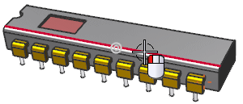
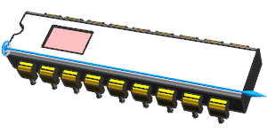
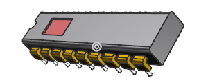
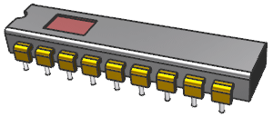

In the graphic window background, right-click and choose Set Rotation Reference.
From the Type filter list, select Edge.
Select the top edge of the blend.

Using the center mouse button, near the center of the graphic window background, rotate the view.

Notice it rotates about the selected edge.
Hold down the Alt key and use the center mouse button the rotate the view.

Notice it now free-rotates about the center of the view.
Release the Alt key and continue to rotate the view. Notice it again rotates about the selected edge.
In the graphic window background, right-click and choose Clear Rotation Reference.
In the graphic window background, right-click and choose Restore.
